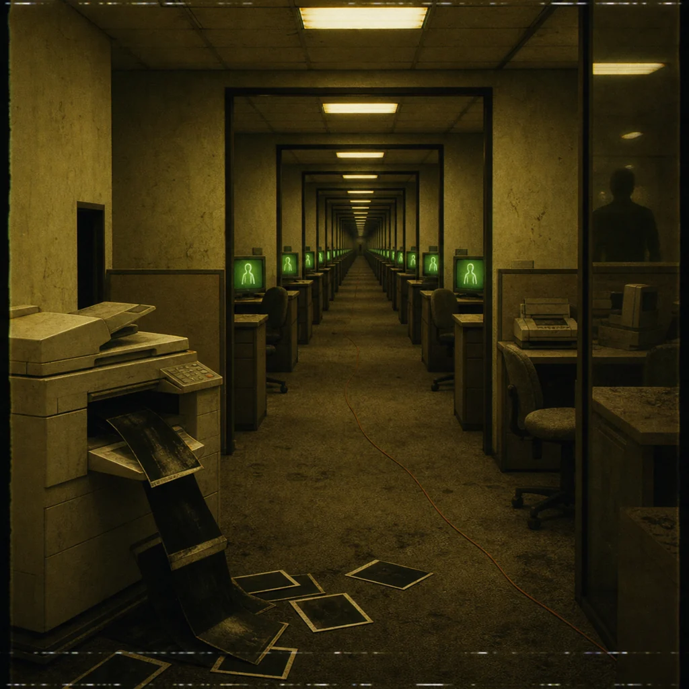

The left intersection folds into a room that should not fit inside the hallway. The carpet repeats in perfect squares. Every cubicle contains the same desk, the same dead phone, the same photograph turned face down.
Then one monitor wakes. Then another. Then all of them. Each green screen shows your name typed in a slightly different hand. One says WANDERER. One says FIXER. One says COPY.
A printer coughs out a page with half the toner missing: "if somebody wears your face in a locked room, the first escape is proving which voice was yours."
press your thumb into the tonerasks who speaks.
answers too fast.
opens the exit.